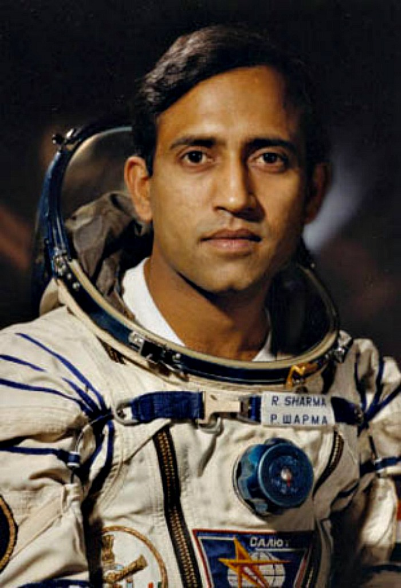
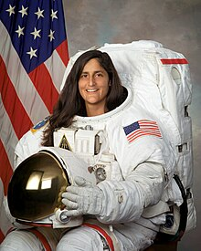
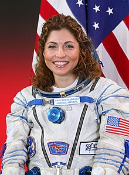
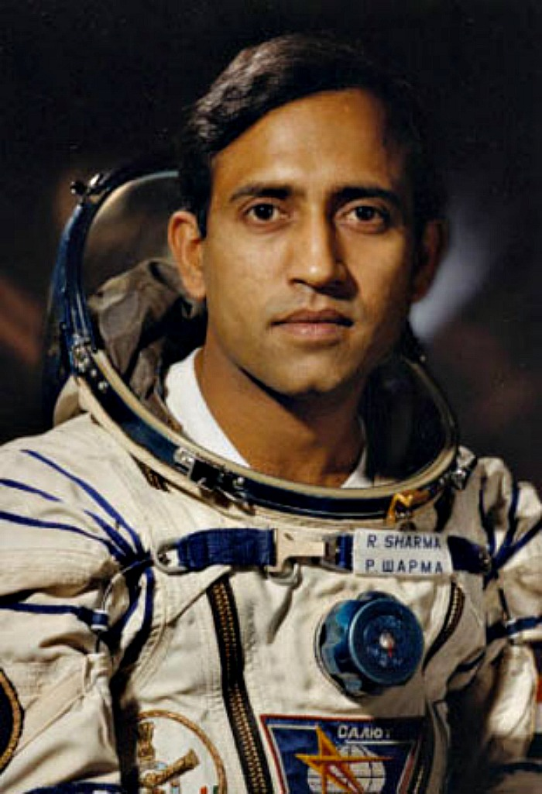
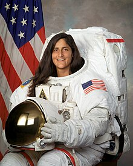
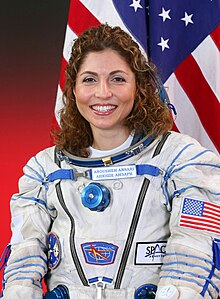

Kalpana Chawla was an Indian-American astronaut and engineer who flew on two space shuttle missions. She was the first woman of Indian origin in space and spent 31 days in space. Chawla died in the Columbia disaster in 2003, but her legacy inspires women in STEM fields.For more details..
military pilot and cosmonaut
Rakesh Sharma
Rakesh Sharma is an Indian military pilot and who became the first Indian citizen in space in 1984. He flew aboard Soyuz T-11 and spent 7 days, 21 hours, and 40 minutes on the Salyut 7 space station and inspiring India's space program
Sunita Williams is an American astronaut who holds the record for most spacewalks by a woman. Born on September 19, 1965, she has spent 322 days in space and has flown on three missions. She is currently living and working on the International Space Station as part of Expedition.For more details..
Flight Engineer
Anousheh Ansari
Anousheh Ansari is an Iranian American engineer and co-founder of Prodea Systems. Ansari was the fourth self-funded space tourist, the first self-funded woman to fly to the ISS, and the first Iranian in space.
 




